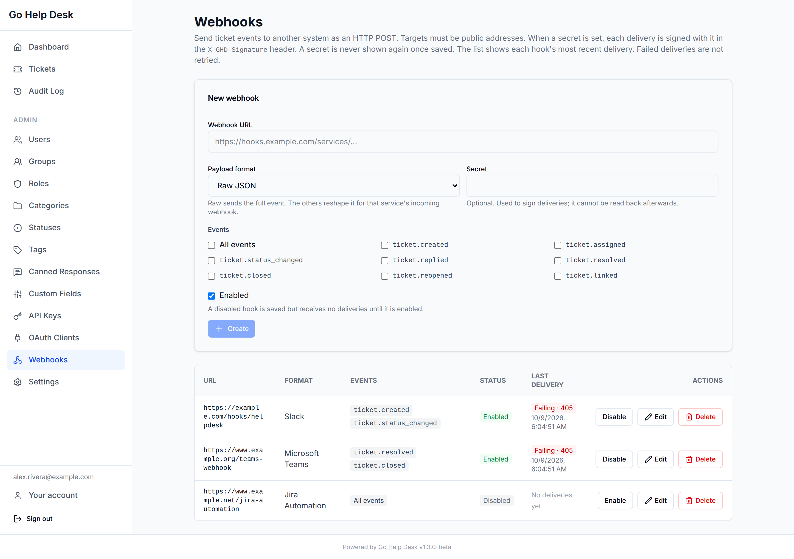
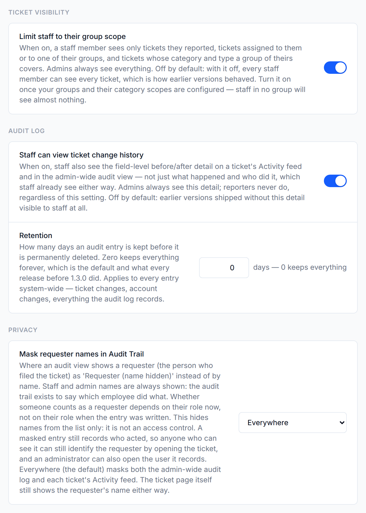
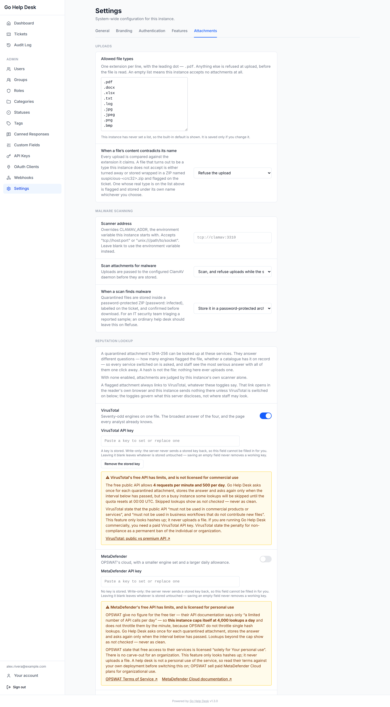

Admin Guide
Configure and manage every aspect of your Go Help Desk installation.
The admin panel is accessible from the sidebar when logged in as an Admin. All configuration in this guide is done through the admin panel unless a restart is required (only for environment variable changes).
What's new for administrators in 1.3.0
- Audit log: a per-ticket Activity feed and an admin-wide Audit Log. Entries are kept forever unless you set a retention period.
- Webhooks: an admin screen, payload formats for Slack, Microsoft Teams, Discord and Jira Automation, and each hook's last delivery result.
- Closed is terminal by default. Reopening closed tickets is an opt-in setting, and a reopen window of 0 closes a Resolved ticket on the next sweep.
- SLA tracking works end to end: timers pause while a ticket is Pending.
- Account recovery: an identity-provider lockout guard, and a
reset-factorscommand for an account that has lost every second factor. MFA reset also clears passkeys. - Guest submission works.
guest_submission_enabledneeds a signed-in administrator, and switching it off also suspends every existing guest link until it is switched on again. Guests may attach files (guest_attachments_enabled, Settings → General → Submissions, session only) is off by default, including after an upgrade, and works only while guest submission is on. It has a per-file size slider (1 to 100 MB, 5 by default, never above the 25 MB instance maximum), a limit of files per ticket (1 to 50, default 5) and uploads per guest link per hour (1 to 30, default 3). See Guest ticket submission. - Attachment security: content detection, malware scanning and reputation lookup, all configured under Admin → Settings → Attachments.
- Staff email: assignments, requester replies and reopens are emailed to staff, with three switches each person controls and an administrator override. On an upgraded install the overrides start as Off for everyone, so turn staff email on under Settings → Email when you are ready. Staff can also follow tickets.
- Email templates: edit the wording of all 17 emails, and a shared header and footer, under Admin → Email Templates.
- Email setup rules: SMTP must use TLS when a password is set, and a missing or failing mail setup shows as a banner instead of failing silently.
- OAuth clients act as service users, so they can write tickets, and are managed from Users and OAuth Clients.
- Routing and a paged Users list, archive and restore for categories, types and items, and webhook History and Redeliver, with ticket filters and retries.
unlockfrom the server, and a reset window for old passwords.- Administration is designed for a desk, but every admin page fits a phone: nothing scrolls sideways at 320 pixels. A wide table scrolls inside its own box with every column and button reachable, and long names, descriptions and URLs wrap. Staff triage and reporting work on a phone.
Categories, Types & Items
Ticket classification follows a three-level hierarchy: Category → Type → Item. This model, sometimes called CTI (Classification-Type-Item), is borrowed from ITSM tooling like BMC Remedy. It lets you route tickets consistently based on what kind of request they are.
Hierarchy rules
- Every ticket must have a Category. Without at least one Category, tickets cannot be created.
- Types are optional. If a Category has no Types, the Type dropdown is hidden entirely on the ticket form.
- Items are optional. If a Type has no Items, the Item dropdown is hidden.
- Each level filters the next — selecting a Category only shows Types that belong to it; selecting a Type only shows Items under it.
Worked example
Hardware
Laptop
Won't power on
Broken screen
Keyboard issue
Battery not charging
Desktop
Won't power on
Monitor issue
Printer
Not printing
Paper jam
Low ink
Software
Microsoft 365
Outlook not loading
Teams audio issue
SharePoint access
VPN
Can't connect
Slow connection
Custom application
Access Requests
New account
Active Directory
Email / Microsoft 365
VPN
Application access
Permission change
Account unlock
Facilities
Building access
Equipment request
ErgonomicsManaging the hierarchy
Navigate to Admin → Categories. The page shows a tree of all Categories with their Types and Items.
- Add Category — click New Category. Give it a name. It appears immediately in the ticket form.
- Add Type — click Add Type next to a Category. Types cannot exist without a parent Category.
- Add Item — click Add Item next to a Type.
- Reorder — drag-and-drop entries to change the order they appear in the ticket form dropdowns.
- Delete: Categories, Types and Items with existing tickets cannot be deleted; the API refuses with
409, and the screen suggests archiving instead. A Category is also kept while an SLA record of one of its SLA policies still exists. Deleting a Category, Type or Item also deletes the custom-field assignments made to it (a Category's include those of its Types and Items). - Archive and restore: see below.
Archiving a Category, Type or Item
Archiving hides an entry from new tickets while keeping every ticket already filed under it. Point at a row and use the archive icon (Archive category, Archive type or Archive item); on a touch screen the icons are always shown and are large enough to tap. You are asked to confirm, because requesters will no longer see it. An archived row shows an Archived badge. Its icon becomes Restore, which undoes it at once with no confirmation.
- Nobody files new tickets into an archived entry: not requesters, not guests, and not staff or administrators either. Creating a ticket, or moving one to a different classification, with an archived Category, Type or Item is refused with
400. This applies to the web screens, API keys and the MCP server alike. - Tickets already in it keep it. Editing such a ticket in other ways, or saving it with the classification it already has, still works.
- Archiving changes one row. A Type under an archived Category keeps its own setting; archive it too if you want it gone. There is no filter to hide archived rows: they stay in the tree, greyed out.
- Staff and administrators still see archived entries in the new-ticket and reclassify pickers, greyed out and marked as archived, but they cannot select them. A ticket's own archived entry stays selected so it can keep it.
Groups in the CTI editor
Each expanded Category or Type row shows a Groups subsection — the groups currently handling tickets at that node. You can add or remove groups directly from here without navigating to the Groups page. See Groups & scope for how scope is calculated. Items do not have a group management section.
Custom fields in the CTI editor
Each expanded Category, Type, or Item row shows a Fields subsection where you assign custom fields to that node. See Custom fields for the full explanation.
Users & roles
Manage accounts from Admin → Users. The page lists accounts with their role, login type, and join date. Click any row to open the user detail page.
Finding accounts in a long list
The list is shown 50 accounts at a time, with Previous and Next buttons and a line such as Showing 1-50 of 640, so an instance with more than 200 accounts can reach every one of them. Narrow the list with the Search name or email box, the All roles drop-down, or the Show drop-down (All accounts, People or Service accounts). Without paging, the API still returns only the newest 200 accounts; ask for a page to go further.
Roles
| Role | Capabilities |
|---|---|
| Admin | Full access to all settings, all tickets, and all user accounts. Can manage categories, groups, statuses, tags, SLA policies and webhooks. Always retains local-auth access even when SAML is enabled. |
| Staff | Can view, reply to, assign and update the tickets they can see: every ticket, unless Limit staff to their group scope is on. Can leave internal notes not visible to users. Can resolve tickets; only an administrator can close one. Can add and remove tags. Can file a ticket for a requester, either an existing user or a typed email address (limited to 40 typed addresses an hour). Cannot access admin settings. |
| User | Can submit tickets and view their own tickets. Can add replies while the ticket is open. Can reopen a Resolved ticket by replying within the configured reopen window. Cannot see other users' tickets. |
User detail page
Click any user in the list to open their detail page. From there you can:
- Edit profile — change display name, email address, and role. Disabled accounts must be re-enabled before editing profile fields.
- View account info — member since date, login type (Local / SSO / Local + SSO), and MFA enrollment status.
- Reset MFA, clears the user's authenticator and every passkey, and ends all of their sessions. The user signs in with their password and enrols again. Only shown when the user has a second factor, an authenticator or a passkey.
- Enable / Disable account — disabled accounts cannot log in. All tickets and history are preserved. Re-enable at any time.
- Reset password — set a new password directly from the admin panel. Only shown for accounts that have a local password (not SSO-only accounts). The form has a checkbox, Also revoke this person's API keys, unticked by default; ticked, it deletes every key the account owns after the password is set and the sessions are ended, and the audit log records
api_keys_revokedwith the number of keys. It is a separate step from the reset: if the keys cannot be revoked after the password was reset, the page shows "The password was reset, but the API keys were NOT revoked" (keys_not_revoked), and if the sessions cannot be ended the answer issessions_not_ended. A person changing or resetting their own password never touches their keys. - Manage group membership — add the user to or remove them from any group.
- Delete account, a soft delete. The account is kept but can no longer sign in, and its tickets and replies are preserved. The confirmation says they will show as a removed user. Requires a second confirmation click. Prefer disabling instead when there is any chance the account may need to be re-activated.
- The last active administrator cannot be disabled, demoted or deleted. The request is refused with
400 bad_request.
Creating a user
Click Add User from the Users list. Enter email, display name, role, and an initial password. The account is created immediately and appears in the list.
Login type column
The Login column in the users list shows how the account authenticates:
- Local — the account uses a password set in Go Help Desk.
- SSO — the account was provisioned through SAML and has no local password.
- Local + SSO — the account can authenticate with either method (common when an admin account was created before SAML was enabled).
Service users
Each OAuth client acts as its own account, a service user, which appears in the list with a Service badge. It never signs in: it has no password, no second factor, no passkey and no single sign-on, and cannot be an administrator. On its detail page you can rename it (which renames the client too), set its role to staff or user, give it groups, and disable it. Its email address, the administrator role and a second-factor reset are refused (409 service_account). Disabling the service user stops the client; enabling it again restores it. You cannot delete it from here: the delete is refused and points you to the OAuth Clients page, because deleting the client is what removes the account. Service users are left out of assignee lists and round-robin, do not count as administrators, and are never emailed.
Locked out of every second factor
An administrator who loses every second factor, with no other administrator to reset it, can be recovered from the server. Run this where the server runs, while the app container is up:
docker compose exec app /app/server reset-factors user@example.comThe command clears the authenticator and every passkey for that account, and ends its sessions. It does not change the password. It writes an audit entry recording the operating-system user and host that ran it, with source set to cli. The user then signs in with their password and enrols a factor again. Anyone who can run the command already holds the server and database credentials, which is why no web route does the same.
Unlocking an account from the server
reset-factors only clears second factors. When an account is locked out in another way, or you cannot tell which, use unlock. It works when the web screens cannot: a lost authenticator or passkey, a disabled account (the only administrator included), a second-factor lockout that has run out its attempts, or a single-sign-on administrator with no usable password. Run it where the server runs, while the app container is up:
docker compose exec app /app/server unlock user@example.comIn one step, it clears every second factor, switches the account back on, clears the second-factor lockout, ends all of the account's sessions, and sets a new random password, which it prints once. Copy it then; it is not shown again, and the audit entry does not contain it. The person must choose a new password at their next sign-in. It writes an audit entry recording the operating-system user and host that ran it. It refuses an address that belongs to no account, and the address of an OAuth client's service user (it names the client instead). If the account cannot use a password to sign in on this instance, for example because single sign-on is required, the command says so after it has finished, because the new password would not help them.
Old password hashes
Releases before 1.3.0 stored passwords in a weaker form. 1.3.0 upgrades an account's stored password automatically the next time its owner signs in. People who do not sign in for a long time keep the old form, so after a deadline they are refused: a correct password on an old hash is rejected with 403 password_reset_required and the message Your password was saved in an older, weaker form and must be reset before you can sign in.
- The setting. Admin → Settings → Authentication → Passwords, Reset window for old passwords (
password_rehash_grace_days). It is a number of days, 1 to 365, and the default is 30. A value below 1 is raised to 1 when you leave the field. The count starts the first time 1.3.0 runs against your database. Changing the number moves the deadline for everyone. - Administrators are exempt. An administrator is never refused for this, so the instance cannot lock itself out. Their password is upgraded at their next sign-in like everyone else's. Staff and requesters are not exempt.
- New installs are not affected, and neither is anyone who signs in within the window.
- How someone gets back in. When the server can send email, the refused sign-in itself mails the person a reset link (limited per address like Forgot password?) and the message tells them to check their email. If no link could be sent, the message says "We could not send a reset link just now. Try again in a minute, or ask an administrator." With email off, the message says to ask an administrator, and you set a new password for them from their user page (Reset password). Tell people who sign in rarely, such as seasonal staff, before the deadline, or reset them in advance.
Forgot password by email
If email is set up, the sign-in page has a Forgot password? link. The person gets a link that works once, for 30 minutes, and a newer request replaces the older link. An account is mailed at most once every five minutes. The page gives the same answer whether or not the address has an account.
- Who gets a link: an enabled account that has a password. Nothing is mailed to a disabled or deleted account, to an SSO account or a local account created without a password, or, when SAML limits password sign-in to administrators, to anyone who is not an administrator. Those people need you (or their identity provider).
- When the password is changed, every session of that account ends. The link signs nobody in: the person signs in again, with their second factor if they have one. Their API keys are not affected.
- Each reset is recorded in the audit log as
password_reset_by_emailwith no actor, besidepassword_reset_by_adminfor the reset you do from the user page. - With email off, the link is not shown and your Reset password on the user page is the only route.
Passkeys unavailable
Passkeys are tied to a domain name. If BASE_URL is an IP address, a single-word host such as http://helpdesk:8080, or contains non-ASCII characters, passkeys are switched off. The server still starts and everything else works, but every administrator sees a banner, Passkeys are unavailable, which gives the reason. Someone whose only second factor is a passkey cannot sign in while this lasts. They are told to ask an administrator to reset their sign-in factors; Reset MFA clears the passkey, and they then enrol an authenticator app. If the locked-out person is the last administrator, use reset-factors above. To get passkeys, give the instance a DNS name and set BASE_URL to it. Changing the domain makes passkeys registered under the old one stop working.
SAML metadata as a URL or pasted XML
Under Admin → Settings → Authentication → SAML the identity provider's metadata can be given as a URL the server fetches, or as XML you paste or upload. The two are alternatives, and a pasted copy is never refreshed. The steps and the refusals are in SAML 2.0 SSO.
Identity-provider lockout guard
Saving SAML or OIDC settings is refused with 400 bad_request when the change would leave no active administrator able to sign in, for example by turning off the only identity provider that an administrator without a password uses. Local password sign-in is not affected by these settings. A change that leaves only some administrators unable to sign in is saved, and the response carries a warning.
Groups & scope
Group membership decides which tickets a staff member can see only when Limit staff to their group scope is on, under Admin → Settings → General → Ticket visibility. It is off by default, and then every staff member can see every ticket. With it on, a staff member sees the tickets they reported, tickets assigned to them or to one of their groups, and tickets whose category and type one of their groups covers. A staff member in no group then sees almost nothing, and a ticket outside their visibility answers as not found, even by its tracking number. An admin always sees all tickets.
How scope is calculated
When a staff member loads their ticket queue, the system collects all CTI scope entries from all their groups, unions them, and returns tickets that match any of those entries.
Scope entries are Category/Type pairs:
- Category only (Type = null) — the staff member sees all tickets in that Category, regardless of Type or Item.
- Category + Type — the staff member sees only tickets with that exact Category and Type. Tickets in the same Category with a different Type are not shown.
Items never affect scope. A staff member scoped to Hardware / Laptop sees all laptop tickets regardless of which Item is selected.
Creating and configuring a group
- Go to Admin → Groups → New group.
- Give the group a name (e.g. "Tier 1 Support", "Networking").
- Under Scope, add one or more Category/Type pairs. Click Add scope entry, pick a Category, and optionally narrow to a Type.
- Under Members, add staff accounts.
Common configurations
| Setup | Configuration |
|---|---|
| Single team, all tickets | One group. Add all Categories (no Type). Add all staff as members. |
| Separate teams by category | One group per team. Each group scoped to the categories that team handles. Assign staff to the relevant group(s). |
| Tiered support | Tier 1 group scoped to all Categories. Tier 2 group scoped to specific Category/Type pairs for complex issues. Staff in Tier 2 also see escalated tickets because they can be assigned directly (assignment overrides scope visibility for the assignee). |
| Cross-functional specialists | Staff can belong to multiple groups. A networking specialist is in "Tier 1" (full scope) and "Networking specialists" (scoped to Software / VPN). They see all tickets from Tier 1 scope plus all VPN-specific tickets. |
Assignment vs. scope
Scope determines what a staff member sees in their queue. Assignment is separate — any staff member can be assigned any ticket, even if it's outside their queue scope. Once assigned, the ticket appears in the assignee's queue regardless of CTI.
This is intentional: you should never be unable to escalate a ticket to a specialist because of routing rules.
Auto-assignment
When a ticket is created, Go Help Desk can automatically assign it without any manual intervention. Assignment follows a three-tier priority chain:
- CTI-scoped group — if the ticket's category or type matches a group's scope, the ticket is assigned to that group. This is the preferred path: configure group scopes under Admin → Groups and routing happens automatically based on what the ticket is about.
- Global group fallback: if no scoped group matches, the ticket is assigned to the catch-all group chosen on the Admin → Routing page (stored as
auto_assign_group_id). Useful for a single catch-all team. - Round-robin users: if no group fallback is configured, the ticket is assigned to the next person in the round-robin list on the same page (stored as
auto_assign_user_ids). The system cycles through the list in the order the people were ticked. - Unassigned — if none of the above apply, the ticket is left unassigned and visible to all staff with scope for that CTI.
The round-robin counter is in-memory and resets on server restart. For high-availability deployments with multiple instances, use group-based routing instead — CTI scopes and the global group fallback are stateless.
Configuring auto-assignment
CTI-scoped groups are configured per category/type from Admin → Categories (expand a row and use the Groups subsection). The two fallbacks are set on Admin → Routing. The page lists the four rules in order, says that the first one that matches wins, and notes that routing runs once, when the ticket is created.
- Catch-all group: a drop-down of your groups, with None as the default.
- Round-robin staff: a list of staff and administrators with a tick box each. Tickets are dealt out to the ticked people in the order they were ticked. Someone who is suspended when their turn comes is skipped, and takes their turn again when re-enabled; they stay ticked. Anyone saved in the list who cannot take work right now, whether suspended or moved to a requester role, is labelled (can't take work right now) and can be unticked. A saved entry for a person who no longer exists is dropped when you save, and the page tells you so.
- Saving a group or person that does not exist, or a person who is not staff or an administrator, is refused with
400 invalid_auto_assignrather than saved and ignored at routing time.
The same two settings can still be changed through PATCH /api/v1/admin/settings:
| Setting | Description |
|---|---|
auto_assign_group_id | UUID of the fallback group. Tickets are assigned here when no CTI-scoped group matches. |
auto_assign_user_ids | Ordered list of staff user UUIDs. Tickets cycle through this list in round-robin order when no group is configured. |
Custom fields
Custom fields let admins attach structured data to tickets beyond the built-in fields (subject, description, priority, CTI). They are managed from Admin → Custom Fields.
Field definitions
A field definition is the global blueprint for a field. It has:
- Name — unique label shown on forms and the ticket detail page.
- Type — controls what input is rendered:
text— single-line text inputtextarea— multi-line text inputnumber— numeric inputselect— dropdown of predefined options (set on the field definition)
- Options (select only) — comma-separated list of allowed values (e.g. "IT, HR, Finance").
- Sort order — controls display order within a CTI level.
- Active — inactive fields are hidden from new-ticket forms. Existing values are preserved for history. Field definitions are never hard-deleted.
Assigning fields to CTI nodes
Fields are assigned from Admin → Categories. Expand a Category, Type, or Item row — each has a Fields subsection where you can assign any active field definition. Per assignment you configure:
- Visible on new — whether the field appears on the new-ticket form when that CTI node is selected.
- Required on new — whether the field must be filled before the ticket can be submitted. Only applies when visible on new is also checked.
- Sort order — drag to reorder within the node.
The fields available on a ticket are the union of all fields assigned to its selected category, type, and item, ordered by scope level (category → type → item) then sort order.
Ticket detail page
Custom field values are displayed in the Custom Fields sidebar card on the ticket detail page. Staff and admins can click Edit to update any value at any time after the ticket is created. Regular users see values in read-only form.
Tags
Tags are free-form labels that staff attach to tickets to aid categorization, search, and filtering beyond the formal CTI hierarchy. They are managed from Admin → Tags.
How tags are created
Tags are created on first use — there is no separate "create tag" step. When a staff member adds a tag to a ticket and types a name that doesn't exist yet, the tag is created automatically. Tags are stored lowercase regardless of what was typed.
Autocomplete
As staff type in the tag field on a ticket, existing active tags matching the prefix are suggested. Staff can select a suggestion or press Enter to create and apply a new tag with whatever they've typed.
Deactivating a tag
If an inappropriate or misspelled tag is created, admins can deactivate it from Admin → Tags by clicking Deactivate. Deactivated tags:
- No longer appear in autocomplete suggestions.
- Cannot be re-created by staff — if someone types the exact name of a deactivated tag, they receive an error explaining that only an admin can restore it.
- Remain visible on tickets that already carry them (historical record is preserved).
Restoring a tag
Admins can restore a deactivated tag by clicking Restore on the Tags admin page. The tag becomes active again and reappears in autocomplete.
Tag rules at a glance
| Action | Who can do it |
|---|---|
| Add a new tag (first use creates it) | Staff, Admin |
| Add an existing active tag | Staff, Admin |
| Remove a tag from a ticket | Staff, Admin |
| Deactivate a tag | Admin only |
| Restore a deactivated tag | Admin only |
| Re-create a deactivated tag name | Not allowed — restore instead |
Canned responses
Canned responses are reusable reply templates staff insert into ticket replies with one click, so common acknowledgements, fixes, and closure messages don't have to be retyped. They're managed from Admin → Canned Responses.
Scope
Each canned response has a name, a body, and a scope:
- Global — leave both Category and Type blank. Available on every ticket.
- Category-scoped — set a Category, leave Type blank. Available on any ticket in that category.
- Category + Type-scoped — set both. Available only on tickets matching that exact category and type.
A response can't be scoped to a type without also naming its category — the Type field stays disabled until a Category is chosen.
Using them in a reply
When composing a reply, staff and admins see an Insert canned response button above the reply box. It opens a searchable picker showing only the responses in scope for that ticket (global, plus any matching its category and type). Selecting one splices the body into the reply at the cursor position — the inserted text is fully editable before sending.
Editing and deleting
Only admins can create, edit, or delete canned responses. Deleting one is permanent (there's no deactivate/restore step like Tags) — since the body is copied into a reply at the moment it's inserted, removing the template afterward never changes replies that already used it. Deleting a category or type cascades to any canned responses scoped to it.
Ticket statuses
Manage statuses from Admin → Statuses. Statuses represent where a ticket is in its lifecycle.
System statuses
These are created automatically on first run and have special behavior. Their names and colors can be changed, but they cannot be deactivated or deleted.
| Status | Special behavior |
|---|---|
| New | The initial status assigned to every newly created ticket. |
| Resolved | Setting this status starts the reopen window timer. Users can reopen the ticket by replying within this window. When set, staff are prompted to enter optional resolution notes. |
| Closed | Set by a background job when the reopen window expires, or by an administrator. Read-only and terminal by default: nobody moves a ticket out of Closed unless Reopening closed tickets allows their role, and requesters never can. The way on is a follow-up ticket. |
Custom statuses
Create custom statuses to represent intermediate states meaningful to your workflow. Common additions:
- In Progress — being actively worked
- Pending — waiting on the user
- Awaiting Vendor — blocked on a third party
- On Hold — intentionally paused
- Escalated — passed to a specialist or manager
Each custom status has:
- Name — shown in the ticket detail and list views.
- Color — hex color for the status badge.
- Sort order — controls the order in status dropdowns.
Deactivating and deleting custom statuses
Custom statuses can be deactivated — they are removed from ticket-creation dropdowns but existing tickets retain the status, and the status continues to appear in filters and reports. Deactivated statuses can be reactivated at any time.
An inactive status is retired for everyone. The ticket status picker no longer lists it (a ticket's own current status stays listed), and the server refuses a move into it with 409 status_inactive, whether the request comes from staff, an administrator or an API key. A ticket already in an inactive status stays there and can be moved out; sending a ticket the status it already holds is not a move.
A custom status can only be deleted permanently when zero tickets are in that status. The delete button appears only when the ticket count for that status is 0. Deleting is irreversible; deactivating is always the safer option.
Status change timeline
Every status transition is automatically recorded on the ticket. The ticket detail page shows a chronological timeline that interleaves replies and status events. Status events show the old and new status (with their colors), who made the change, and the timestamp. The initial status on ticket creation is also recorded.
Reopen window
Configure how many days after Resolved a requester can reopen a ticket by replying. Set this from Admin → Settings → General → Ticket lifecycle → Reopen window and auto-close. The default is 7. Set it to 0 for no reopening at all: a Resolved ticket is closed, and read-only, on the next automatic sweep, about five minutes later.
Reopen target status
When a ticket is reopened, it is moved to the Reopen target status. Configure this from Admin → Settings → General → Ticket lifecycle → Reopen target status. The picker lists all active, non-system statuses — system statuses (Resolved, Closed) are excluded because transitioning a reopened ticket back into a terminal state would immediately re-trigger the close flow. If no target status is configured, the ticket is moved to the status named New. The same happens if the configured target has since been deactivated: every reopen goes to New, administrators see a banner, The reopen target status is inactive, asking for an active status, and the request that deactivates the target comes back with a warning.
A reopen does more than change the status. It flags the ticket, raises its priority one level on the first reopen only, starts the SLA over, and emails staff. See Reopened tickets.
Reopening closed tickets
Closed is terminal by default. Reopening closed tickets, under Admin → Settings → General → Ticket lifecycle, decides whether a Closed ticket can be force-reopened, and by whom:
| Setting | Stored value | Who can reopen a Closed ticket |
|---|---|---|
| Off (terminal) | off, the default | Nobody. |
| Admins only | admin | Administrators. |
| Staff and admins | staff_admin | Staff and administrators. |
Requesters, whether account holders or guests, can never reopen a Closed ticket, whatever this is set to. Staff and admins who need more work on a closed ticket open a follow-up ticket instead. A follow-up is available on every closed ticket; a requester may open one per ticket, and staff and admins are not limited.
The setting is read on every request, so a change applies at once. It is session-only: an API key or OAuth client that tries to change it is refused with 403 session_required. A value the server does not recognise is refused with 400 invalid_closed_reopen_policy.
SLA policies
SLA (Service Level Agreement) tracking is an optional feature. Enable it from Admin → Settings → Features → SLA tracking. It can also be pre-enabled at server startup by setting the SLA_ENABLED=true environment variable.
Once the SLA tracking toggle is on, a SLA Policies management blade appears directly in the Features tab. Policies define the maximum time from ticket creation until a first response and until the ticket is resolved.
Policy fields
| Field | Description |
|---|---|
| Name | Display name for the policy, e.g. "Critical — 1h response" |
| Priority | Apply this policy to tickets of this priority: critical, high, medium, or low. |
| Category | Optional. Restrict this policy to a specific category. Leave at "All categories" for a catch-all. |
| Response target | Minutes from ticket creation until a staff reply must be added. |
| Resolution target | Minutes from ticket creation until the ticket must be marked Resolved. |
Policy matching
When a ticket is created, the system selects an SLA policy by matching in this order. The same order is used again when staff change a ticket's priority (the ticket is matched against the new priority and its category, and the clock is not restarted), and when a ticket is reopened:
- Priority + Category — most specific match
- Priority only
- Category only
- A default policy (a policy with no Priority and no Category)
- No SLA — if no match
SLA indicators in the ticket queue
The ticket list shows a visual indicator for each ticket's SLA status:
- Green — within SLA
- Amber — at or past 80% of the target
- Red — at or past the target
The colour is computed fresh on every read from elapsed-time-against-target, not from the stored breach stamp — so it never lags behind the sweep that writes those stamps. The queue cannot be sorted by it: the column shows where each ticket stands, but the order is still by creation date.
Who sees it. The indicator, the policy name, the targets and the breach state are shown to staff and administrators only. A reporting user never sees any of it on their own ticket — the API returns "sla": null for them whether or not a policy is attached — so a customer cannot tell how their ticket is being timed, or that it has breached.
Pausing SLA timers
When a ticket is moved to the Pending status (waiting on the user), the SLA timer is paused. The timer resumes when the ticket moves out of Pending. This prevents SLA breaches for tickets that are legitimately waiting on a response from the submitter. A ticket can pause and resume as many times as it needs to, and the paused time accumulates. Reopening a ticket starts its SLA over: the earlier record is kept, a new one starts at the reopen, and staff see an SLA restarted badge on the ticket. A reopen does this every time, nothing happens while SLA tracking is switched off, and a staff change of priority never restarts a clock by itself.
It is matched by name. “Pending” is an ordinary custom status that the seed data creates — there is no per-status “pauses the SLA” switch. The consequences are worth knowing before you edit it: renaming it stops tickets pausing from that point on, though one already in it stays paused until it leaves; deactivating it stops tickets entering it, because an inactive status can no longer be moved to (a ticket already in it stays paused until it leaves, and a reopen cannot enter it either); and deleting it removes the only way to pause an SLA at all. Whatever status is named Pending — renamed back, or newly created — becomes the pause status.
Email setup & warnings
Email is set up with environment variables in docker/.env, not in the admin panel: SMTP_HOST and SMTP_FROM turn it on, SMTP_PORT defaults to 587, and SMTP_USER and SMTP_PASSWORD are optional. Restart the server after changing them. Email fails loudly: it never sends a password unencrypted (to any server, a private one included), it sends mail without a password unencrypted only to a private address, and a problem shows in the admin panel.
Encryption rules
- With
SMTP_PASSWORDset, TLS is required. Port 465 uses TLS from the first byte; every other port must offer STARTTLS. The password is never sent unencrypted, even to a private address. - With no password, plain SMTP is allowed only when the server's address is loopback or private (10.x.x.x, 172.16-31.x.x, 192.168.x.x, or IPv6 fc00::/7). A public address still needs TLS.
- If
SMTP_USERis set, the server must offer authentication. Otherwise the send fails rather than going out anonymously. - A mail server that offers STARTTLS (or uses port 465), and AUTH when you set
SMTP_USER, needs no change. A relay on this machine that took a password without TLS, or a public server without STARTTLS, now fails; turn on STARTTLS on it, or drop the password if the relay does not need one on your network.
What you will see
- Email is not set up banner for administrators, listing which of
SMTP_HOSTandSMTP_FROMis missing. It appears only when self-service signup or guest submission is on, because those cannot work without email. An install that runs without email on purpose, and uses neither, sees no banner. Settings shows the same note beside the signup and guest submission switches. - Turning on signup or guest submission is refused while email is off: saving the setting answers
400 email_required, and the screen explains what to set. An install that already has either on is not switched off and can still save other settings; it gets the banner instead. - Email is not being delivered banner (red) while any message is being retried or has failed in the last day. It shows how many messages are affected and the latest error, with addresses replaced by
[address]. Failed sends are retried for about an hour and then marked failed. A broken email template fails the message at once, with no retries. - The server log says once at startup whether email is enabled, and warns when only one of
SMTP_HOSTandSMTP_FROMis set.
Staff email about tickets
Staff and administrators are emailed about their own tickets, which earlier releases never did. On an install upgraded from an earlier version (one that already has users), all three staff email overrides start as Off for everyone, so no staff email is sent until an administrator changes them under Settings → Email. A fresh install is unchanged: each person's own switches start on and the overrides use each person's choice. Nothing is sent while email is not configured. Each person chooses what they get under Your account → Email about tickets; see Email to staff for what each switch covers.
One mail per person per change. A change is queued in the same step as the change itself, so a change that fails sends nothing. The server works out who is mailed a moment after the change commits. At most one mail goes to any address for one change (addresses are compared without regard to case). A person who qualifies for several reasons in one change, such as being assigned and following the ticket, gets one mail, for the first of assigned, reopened, and requester replied whose switch is on. When a guest's address is also a staff member's, the staff mail is the one sent. A person who files a ticket that auto-assignment then assigns to them gets one mail. If the server cannot look up a ticket's followers or a group's members, the whole change is retried and no mail for it goes out until everyone is known, the requester's included. It is tried 8 times over about an hour and then marked failed; the log says "staff email: could not work out who to notify". Assigning a ticket to who and what it already has sends no mail. Mail queued before the upgrade is sent as it was.
Overriding the switches for everyone
Under Admin → Settings → Email, the Staff email about tickets section has one drop-down for each switch. Each offers Use each person's choice (the default on a fresh install), On for everyone and Off for everyone; the last two ignore what people chose. On an upgraded install all three start as Off for everyone; an override you had already stored is kept. To turn staff email on, set them to Use each person's choice or On for everyone.
| Switch | Setting |
|---|---|
| Tickets assigned to me | staff_email_assigned_override |
| Activity on tickets I'm assigned to or follow | staff_email_activity_override |
| My groups' tickets | staff_email_group_override |
- On an upgraded install these start as Off for everyone, so nobody is mailed until you change them. Change them when you are ready for staff to start getting mail.
- The override of the activity switch also covers people following a ticket, and mail about reopened tickets.
- The mail goes to staff and administrators only. An OAuth client's service user is never emailed, even when it is in a group. Nobody is emailed about their own action.
- These emails carry only the ticket's tracking number and a link, like every other email from the help desk. Their wording changes with why the person is being told: assigned to you, assigned to your group, or a ticket you follow.
Email templates
Under Admin → Email Templates (also linked from Settings → Email) an administrator can edit the subject and body of every email the help desk sends, and a header and footer that go around all of them. The text is plain; there is no HTML version. Until you edit something, every email is exactly what it was before the editor existed.
There are seventeen. Six go to requesters and guests, nine to staff, and two to people setting up or recovering an account:
| Template | When sent | Recipient |
|---|---|---|
ticket_created | A ticket is filed with a guest address | That address |
ticket_replied | Staff post a public reply with Send ticket update email to customer ticked (the default), or a public reply is added through the MCP add_reply tool, which always notifies | The requester, account holder or guest |
ticket_status_changed | A guest's ticket changes status, other than to Closed | The guest |
ticket_resolved | A guest's ticket is resolved | The guest |
ticket_reopened | A guest's Closed ticket is reopened with the Reopen action. A reopen by the guest's own reply sends no mail | The guest |
guest_link | A guest asks for a new link at /track | The guest |
email_verification | Someone signs up | The address they gave |
password_reset | Someone asks for a password reset, or a refused sign-in on an old password sends one | That account's address |
staff_assigned, staff_assigned_group, staff_assigned_follow | A ticket is assigned to the person, to a group they belong to, or a ticket they follow is assigned | That staff member or administrator |
staff_requester_replied, staff_requester_replied_group, staff_requester_replied_follow | The requester replies on a ticket assigned to the person, on a group ticket nobody holds, or on a ticket they follow | That staff member or administrator |
staff_reopened, staff_reopened_group, staff_reopened_follow | A ticket assigned to the person, to a group they belong to (when nobody holds it), or that they follow is reopened | That staff member or administrator |
Closing and internal notes send no email to anyone. An account holder is emailed only about public replies from staff; the status mails exist for guests, because each one carries the guest's replacement link. Staff mail is described under Staff email about tickets. Assigning a ticket emails the new assignee, not the requester.
Editing
- Check as you type. About 0.4 seconds after you stop typing, the draft is checked on the server. A problem is shown beside the field with its line and column, and Save stays off until the draft is valid. The server checks again on every save.
- Limits. The body can be up to 8 KiB, and the subject up to 200 bytes on one line.
- The link must stay. Each ticket email must print its ticket link, the verification email its verification link and the reset email its reset link, outside any
{{if}}. A guest's link is replaced each time, so an email without it would lock the guest out. - Revert to default removes your edit. Saving text that equals the default does the same.
- Send test mails the draft to your own address only, with
[Test]before the subject. It is limited to 5 every 10 minutes per administrator, and a mail server error is shown on the page. It needs email to be set up. - Session only. Edits need a signed-in administrator in a browser, with a second factor. An API key or OAuth client is refused with
403, because a key that could edit the reset email could point it at a link of its own. - Audit. Each save and revert is recorded in the audit log with the full text, in the same step as the change. A test send records the template and never the address.
When an edit stops working
An upgrade can remove a value an old edit used. The mail that uses a saved edit that no longer validates fails at once and is not retried; it does not quietly fall back to the shipped text, because that would hide your wording and you chose it. Administrators see a red notice per template in the warning bar with Revert to default and Edit, and the same list is in email.broken_templates of GET /api/v1/admin/security-warnings. A broken header or footer fails every email. Mail that failed before you reverted is not sent again.
Template variables
A template may contain words, a value written {{.Name}}, and {{if .Name}}…{{else}}…{{end}}, and nothing else. Anything else (a function, a loop, a whole-data print) is refused with its line and column. The values are:
| Template | Values |
|---|---|
| The ticket emails, requester and staff | .TrackingNumber (for example GHD-2026-000001) and .TicketURL (the ticket's address, a private link for a guest) |
email_verification | .VerifyURL |
password_reset | .ResetURL |
| Header and footer | .SiteName, the name set under Settings |
There is no ticket subject, reply text or submitter, and none can be added. From v1.2.0 a notification email carries no content from the ticket at all — mail leaving the help desk is sent from the operator's domain, and anyone who can file a ticket chooses that text, so the content stays in the application behind the access rules that already govern it. That rule holds for edited text exactly as for the shipped text. See Upgrading to 1.2.0.
The whole of the shipped ticket_replied body:
There is a new reply on your ticket.
Ticket: {{.TrackingNumber}}
Read it here:
{{.TicketURL}}Messages are text/plain, quoted-printable, with no HTML alternative. The header and footer are joined to the body exactly as written, with no line break added, so end your header with one if you want a gap.
If you need the ticket text in an external system, use a webhook. A hook in the Slack, Teams, Discord or Jira Automation format carries the subject, tracking number, status and public reply text, because a webhook target is registered by an administrator rather than chosen by a reporter. A raw JSON hook carries ids only; fetch the ticket through the REST API with the TicketID it gives you. See Payload formats.
Webhooks
Webhooks send ticket events to another system as an HTTP POST. Manage them from Admin → Webhooks. Each hook in the list has Disable or Enable, History, Edit and Delete.
Configuration
| Field | Description | |
|---|---|---|
URL | required | The http or https endpoint that receives the requests. It must be a public address. A private or internal address is refused when the hook is saved (400 invalid_url), and again when the hook is called. |
Payload format | Raw JSON | The body shape. See Payload formats. |
Secret | optional | Signs each delivery with HMAC-SHA256. It is write-only: it is never shown again after it is saved, and an empty secret field on edit keeps the stored one. |
Events | required | One or more event names from the table below, or All events, which is stored as *. |
Tickets | optional | Limits the hook to tickets in chosen categories, priorities or assigned groups, or sends for every ticket that does not match. See Limiting a hook to some tickets. A hook with no filter, which is every hook created before this existed, receives every ticket. |
Enabled | A disabled hook receives nothing. A hook can be created switched off, so it can be saved before its receiver is ready. |
Which events a hook receives
- Every enabled hook that subscribes to one of a change's event names receives it, once.
*(All events) subscribes to every name. See One change, one delivery. - A hook with no ticket filter receives every event of its types, whatever the ticket's category, priority or group. With a ticket filter it receives them only for the tickets the filter admits.
guest.link_resentis never sent to webhooks. The API refuses it as a subscription (400 invalid_event_name).- The API refuses an empty events list on create and on update (
400 missing_events). An empty list is how a hook saved before events were required is stored, and delivery treats it as all events; the admin screen shows it as All events.
Events
| Event | Sent when |
|---|---|
ticket.created | A ticket is created, by any route. A ticket that auto-assignment gives an assignee when it is created is announced once, as created and assigned. |
ticket.assigned | The assignee or the assigned group changes, or the ticket is unassigned. Assigning a ticket to who and what it already has, or clearing a ticket that is already unassigned, announces nothing. |
ticket.status_changed | The status moves to a different one, from any route: the status picker, PATCH status_id, MCP update_ticket_status, the Resolve and Close actions, the automatic close, or a requester's reply that reopens the ticket. A change to the status the ticket already has is not announced as a status change. |
ticket.replied | A customer-visible reply is added. Internal notes are not sent with this event. |
ticket.note_added | An internal note is added. A hook that listed only ticket.replied before 1.3.0 stops receiving notes; add this event, or choose All events, to keep them. |
ticket.resolved | The ticket moves into Resolved, by the Resolve action (Mark Resolved, or POST /api/v1/tickets/{id}/resolve, including when it is resolved as a duplicate) or by a status change. Using the Resolve action on a ticket that is already Resolved, with new notes, sends this event alone. |
ticket.closed | The ticket moves into Closed: Close Ticket by an administrator, the automatic sweep, or a status change. |
ticket.reopened | A ticket is reopened: a requester's reply on a Resolved ticket, a status change by staff or an administrator out of Resolved or Closed, or the Reopen action on a Closed ticket, which Reopening closed tickets must allow. |
ticket.priority_changed | The priority is changed, by staff or by a reopen raising it. New in 1.3.0. |
ticket.classified | The category, type or item is changed. New in 1.3.0. |
ticket.linked | A link is created between two tickets, including the link a follow-up makes. |
One change, one delivery
A change to a ticket is one event, however many things it changes, and it is saved to the delivery queue in the same step as the change. If the change fails, nothing is sent. A hook gets one delivery per change, even when it is subscribed to All events or to several names and the change counts as several of them (for example, one save that changes the status, the assignee and the priority, or a requester's reply that reopens a ticket).
- The delivery carries one name, in
Typeand in theX-GHD-Eventheader: the first of these that the hook subscribes to, in this order:ticket.created,ticket.reopened,ticket.resolved,ticket.closed,ticket.status_changed,ticket.assigned,ticket.priority_changed,ticket.classified,ticket.replied,ticket.note_added,ticket.linked. A hook subscribed to one name is told that name, as before. - Switching on
Typecan miss a kind. The body does not list the other kinds. A requester's reply that reopens a ticket arrives asticket.reopenedonly, so a receiver that handles justticket.repliedwill not see that reply. To know more than the label, read the ticket through the REST API withTicketID. - The same status move has the same names from every route. A move into Resolved is
ticket.status_changedandticket.resolved. A move into Closed isticket.status_changedandticket.closed. A move out of Resolved or Closed into an open status isticket.status_changedandticket.reopened. This is a change from 1.2.x:ticket.status_changednow also comes from the Resolve and Close buttons, the automatic close and a reopening reply, andticket.resolvedandticket.closednow also come from a change of status. - A change to the status the ticket already has announces nothing about status. 1.2.x sent
ticket.status_changedhere. A save that repeats the current status and also assigns someone sendsticket.assignedonly. - The raw body is unchanged: ids only, with no tracking number and no list of kinds. Deliveries queued before the upgrade are sent as they were.
Chat and Jira messages
- Under the headline, a Slack, Teams, Discord or Jira message can add one line such as Also: assigned, priority changed. It names only the other kinds that this hook subscribes to, so a hook never learns of something it did not ask for. A hook subscribed to a single name gets no such line. A Jira message gains an optional
alsokey under the same rule. - The text of a reply is included only for a hook subscribed to
ticket.replied(or All events). A hook subscribed toticket.reopenedalone still gets its Reopened message, without the reply that caused it. Internal notes are never included. - For
ticket.priority_changedandticket.classifiedthe headline reads "Priority changed" and "Reclassified", with no priority, category or type name. A Jira message keeps the event name in itseventkey. - A Jira message includes the status name only for a hook subscribed to a status event (
ticket.status_changed,ticket.resolved,ticket.closedorticket.reopened).
Limiting a hook to some tickets
In the webhook form, the Tickets group has tick boxes for Category, Priority and Group (the group the ticket is assigned to), and a Send for drop-down with Tickets that match and All other tickets. Leave everything unticked to send for every ticket. In the list of hooks, the Tickets column shows the result, for example All tickets, or Category: Hardware or Software, or All except followed by the conditions.
- How conditions combine. Within one list, any ticked value matches. Every list that has a tick must match. Choosing All other tickets inverts the result.
- An event the filter turns away is not a delivery. It has no delivery id, no retry and no entry in History.
- The filter is read as it is now. It is tested when the event happens, again at each attempt of a queued delivery, and again at Redeliver. If you tighten a filter, deliveries already waiting for a retry that it no longer admits are dropped at their next attempt, with nothing sent and no History entry. If you widen it, they still go out. A retry is judged against the ticket as it was when the event happened.
- A ticket that auto-assignment routes when it is created is announced with its group already set, so a group condition can match
ticket.created. - The filter does not change what a hook is sent: the body is the same, and the ticket details used for the test are never put in a body or kept in History.
Payload formats
Each hook has one payload format. Raw JSON sends the event as JSON, shown below. Slack, Microsoft Teams, Discord and Jira Automation rewrite the body into the shape that service's incoming webhook expects. The signature covers the body that is actually sent.
Raw JSON body
POST https://your-endpoint.example.com/webhook
Content-Type: application/json
X-GHD-Signature: sha256=<hmac-hex>
X-OHD-Signature: sha256=<hmac-hex>
X-GHD-Delivery: <uuid>
X-GHD-Event: ticket.status_changed
{
"Type": "ticket.status_changed",
"TicketID": "01JQABC...",
"ActorID": "01JQDEF...",
"Payload": { "new_status_id": "01JQGHI..." },
"OccurredAt": "2026-04-05T14:32:00Z"
}The keys are the field names of the event, as they are written in the body. ActorID is null for an event the system made, including the ticket.assigned delivery for a new ticket that auto-assignment routed (a ticket.created delivery for it still names the creator). The raw body carries ids only. It has the event name (Type), TicketID, ActorID and OccurredAt, and, where the event has them, a Payload holding new_status_id (a status change) or target_id (a link). It does not carry the tracking number, subject, priority, any email address or name, or the text of a reply or note. A receiver that needs those fetches the ticket through the REST API with TicketID. Whether something is a reply or a note is the event name, ticket.replied or ticket.note_added. The Slack, Teams, Discord and Jira Automation formats still carry the subject, tracking number, status and public reply text, and never an address or a note's text. A guest's access token is never part of any body.
Verifying the signature
The X-GHD-Signature header is sha256=<hex> where the hex is an HMAC-SHA256 of the raw request body, keyed with your webhook secret. Each delivery also carries X-OHD-Signature with the same value, kept for integrations written before the rename. Verify X-GHD-Signature.
# Python
import hmac, hashlib
def verify_signature(secret: str, body: bytes, header: str) -> bool:
expected = "sha256=" + hmac.new(
secret.encode(), body, hashlib.sha256
).hexdigest()
return hmac.compare_digest(expected, header)
# Node.js
const crypto = require('crypto');
function verifySignature(secret, body, header) {
const sig = 'sha256=' + crypto
.createHmac('sha256', secret)
.update(body)
.digest('hex');
return crypto.timingSafeEqual(Buffer.from(sig), Buffer.from(header));
}Delivery and retries
Each attempt has a 10-second timeout. A delivery that fails with a connection error, a DNS or TLS failure, a timeout, a 5xx status or 429 is tried again: there are 8 attempts in all, with a wait that starts at 30 seconds and doubles each time (30 seconds, then 1, 2, 4, 8, 16 and 32 minutes), each wait capped at an hour. In practice the waits add up to a little over an hour. Email uses the same schedule. If a 429 or 5xx answer carries Retry-After asking for a longer wait than the schedule, that wait is used, up to an hour. A blocked (private or internal) address, and any other status such as 400 or 404, is not retried.
A receiver can therefore see the same event twice. Every delivery carries two headers: X-GHD-Delivery, a UUID that stays the same across the retries of one delivery (use it to drop a repeat), and X-GHD-Event, the event name. The signature headers are unchanged. If you change a hook's URL, deliveries still waiting for the old address are dropped, and so are deliveries waiting for an event the hook no longer lists, or that are for a hook that is now disabled.
Last delivery
The list shows each hook's most recent delivery: Delivered with the HTTP status, or Failing with the status or a failure class, and when it happened.
| Shown as | Meaning |
|---|---|
| Delivered · 2xx | The receiver answered with a 2xx status. |
| Failing · 3-digit status | The receiver answered with a status that is not 2xx. |
| Failing · timed out | There was no answer within 10 seconds. |
| Failing · host not found | The host name did not resolve. |
| Failing · TLS error | The TLS handshake or the certificate failed. |
| Failing · blocked address | The address was private or internal when the delivery was made. |
| Failing · connection failed | The connection was refused, reset, or closed without a response. |
| Failing · error | Any other failure. |
The list keeps only the latest result per hook, as a class, never as the error text or the response body, because a webhook URL can carry a secret. A hook that has never been delivered to shows No deliveries yet.
Webhooks made by an API key
A webhook that an API key created, or last changed the URL of, is tied to that key. When the key is revoked or expires, or its owner is disabled or deleted, the hook is paused: the list shows a Paused badge with the reason ("Its API key, or that key's owner, is no longer active"), and it receives nothing, including deliveries already queued. A key cannot lift the pause by editing the hook (403 webhook_paused). A signed-in administrator clicks Re-approve, or changes the hook's URL (a URL edited in a session counts as approving the new address). Hooks made or last re-pointed in the web UI are not tied to a key, and neither are the hooks that existed before the upgrade.
History and Redeliver
Each hook has a History button that opens its last 25 deliveries. Each row shows the event, the result (Delivered, Retrying, Failed or Dropped, with the status, failure class or reason), the number of attempts and the time of the last attempt. No payloads and no error text are kept.
Dropped means a queued retry was never sent because the hook changed, and it says why:
- hook switched off: the hook was disabled;
- its API key, or that key's owner, is no longer active: the hook is paused because its key was revoked or expired, or the key's owner was disabled or deleted;
- no longer subscribed to the event: the hook stopped listing the event;
- filter no longer admits the ticket: the hook's ticket filter was tightened;
- body could not be built: the message could not be put together;
- URL changed: the hook was pointed at another address. A change of URL also clears the hook's history, so you rarely see this one.
A blocked address is not a drop: it is a failed attempt.
Redeliver on a row sends that delivery's event again as a new delivery, with a new X-GHD-Delivery id so a receiver that drops repeats by id does not discard it. It is queued and sent in the background, and retried like any delivery; the page says it is queued, and the row appears in History once it has been attempted. A raw hook gets the same ids-only body as the original. A Slack, Teams, Discord or Jira message is rebuilt from the ticket as it is now, so it can differ from the original, and a reply's text is included only if the reply still exists and is public.
Redeliver is refused, with a message, when:
- the hook is disabled (
409 webhook_disabled): enable it first; - the hook no longer lists that event (
409 webhook_not_subscribed): add the event first; - the hook's ticket filter, as it is now, does not admit the ticket (
409 webhook_filter_excludes): change the filter first; - the hook has a filter and the ticket has since been deleted, so the filter cannot be checked (
409 webhook_filter_unverifiable). A hook with no filter is still sent.

OAuth clients
An OAuth client lets another system, such as a CI pipeline or a sync job, call the API with a client ID and secret exchanged for a short-lived token. Manage them from Admin → OAuth Clients. To create one, give it a name, pick its permissions (scopes) and click Create. The client ID and secret are shown once; the secret is not shown again. Revoke deletes a client: its existing tokens stop working immediately, and its service user is deleted.
Each client acts as a service user
Every client has a service user: an account made with the client and named after it, that the client acts as. The list shows it in the Acts as column, with a link to its page, and shows the service user's groups in the Groups column.
- A client with
tickets:writecan create tickets and replies. They are made as its service user, and the audit trail shows the client's name. (Before 1.3.0 these calls were refused.) A client with onlytickets:readis still refused. A ticket a client opens sends no requester email. - The service user's groups are the client's ticket scope. With Limit staff to their group scope off, a client behaves as before. When you turn it on, saving the setting tells you which clients have a service user in no group, because they will see no tickets, and a banner, OAuth clients see no tickets, keeps naming them until each has a group or is disabled. The Groups column also shows No groups for them. Add the groups before you turn the setting on.
- Disabling the service user stops the client. Enable it to restore access. Renaming the user renames the client.
- Service users never sign in, are hidden from assignee pickers and round-robin, do not count as administrators, and are never mailed. Upgrading creates one for each existing client, named after the client, with the staff role and no groups.
API keys
API keys are for scripts and integrations. Administrators manage them under Admin → API Keys. Staff can manage their own under Account → API keys when you allow it.
Settings
Both are under Admin → Settings → Authentication → API keys, and both are session-only: an API key or OAuth client cannot change them.
| Setting | Default | What it does |
|---|---|---|
Staff may create their own API keys (staff_can_create_api_keys) | off | Lets staff create keys for themselves under Account. Turning it off stops new keys only: existing keys keep working, and staff can still list and revoke their own. |
Longest an API key may live (api_key_max_lifetime_years) | 2 years | A slider with stops of 1 to 5 years and Never. The page shows a red warning above 2 years. Every new key must expire, no later than this; only at Never may the date be left out. The limit is checked when a key is created, so lowering it does not break existing keys. A key with no expiry, or one past the limit, shows "No expiry (longer than the current limit)" so you can rotate it. |
Who owns a key, and what it can do
- Administrators always can own keys. Staff can while the first setting is on. Requesters and service accounts never own one.
- You can issue a key on a staff member's behalf (or for yourself) when you create it. Not for another administrator. The key list shows "Issued on their behalf", and the owner sees "Issued for you by an administrator".
- A key acts within its owner's current role, and its scopes never exceed it. A staff key can carry
tickets:read,tickets:write,groups:readandaudit:read(users:readis no longer offered: its one staff route, the requester lookup, is session-only). Promoting a staff member who holds an administrator-issued key leaves an administrator holding it; revoke it if you do not want that. - A key cannot create keys or OAuth clients, and cannot write users: it can read users and groups, but cannot create, change, disable or delete an account, set a password, clear a second factor, change an email, or change group membership or scope. It also cannot change
ticket_scope_enforcedor the auto-assignment settings. These need you, signed in. The scopeusers:writeis no longer offered. - Every key issued or revoked is written to the audit log (
api_key_issued,api_key_revoked).
Updates and the After upgrading wizard
Weekly check for new releases (off unless you choose it)
The server can check whether a newer release exists. It is off on a new install and stays off after an upgrade, and while it is off the server makes no request at all. Turn it on under Admin → Settings → General → Updates (update_check_enabled, session only: an API key or OAuth client cannot change it), or at first-run setup.
- What is sent. One
GETto GitHub's public releases API (https://api.github.com/repos/PubliciaLLC/go-help-desk/releases/latest) with two headers of its own:User-Agent: go-help-desk(a fixed name, no version number) andAccept: application/vnd.github+json. No query string, body, cookie, instance identifier or usage data, and nothing about your server or version. GitHub sees your server's IP address, as any website would. - How often. At most once every 7 days, and not again after a restart until the week is up. A failed check is logged once and tried again the following week.
- What you see. If a newer stable release exists, administrators (only) see an information notice in the server warnings bar: "Version X is available (you run Y). Release notes". It never turns the bar red or counts as a problem. Hide until the next release is remembered in your browser. Nothing is downloaded or installed. Prereleases and drafts are ignored.
- Air-gapped installs: leave it off.
The After upgrading wizard
On an install upgraded from an earlier release, the first administrator who signs in is taken once to a short After upgrading to 1.3.0 wizard. Each step shows today's setting, says what changed in 1.3.0 and lets you change it, with Back, Next and Skip. Skip leaves that setting unchanged. The steps are:
- Weekly check for new releases, unticked.
- Staff email notifications: the upgrade turned the three overrides off.
- Staff API keys: whether staff may create their own, and the longest an API key may live.
- Reset window for old passwords, with the number of accounts still on an old password hash and whether email is set up.
- Guest file uploads, shown only while guest submission is on: 1.3.0 switched guest uploads off, and this step offers the setting, the size slider and the limits.
Finishing or skipping the wizard means it is not shown again; closing the tab part-way shows it again next time, with the steps already saved showing their new values. A new install never sees it, because first-run setup asks the update question itself. Staff and requesters are never sent to it. Every change goes through the same settings checks as the Settings page.
Server warnings
Administrators see problems with the server in one slim bar above the page, never a stack of banners. Where this guide says a "banner", it means a notice in this bar. The bar is one line: "N server problems need attention", or the notice's own title when there is exactly one, with a Details button that opens the full explanation of each notice.
- Red marks something broken now: exposed secrets, attachment storage that cannot be written, a virus scanner that cannot be reached (under either scan policy), and email that is not being delivered. Amber marks a configuration notice, such as email not set up, passkeys unavailable, or attachments not being scanned.
- Hide removes one notice for your current session. It returns at your next sign-in, after your session expires, or when the problem gets worse (for example a changed scanner policy, more failed email, another exposed secret). When every notice is hidden the bar goes away. Nothing about hiding is sent to the server.
- The bar checks again when the window regains focus and when you open Details, so a fixed problem stops showing within seconds. Long commands in a notice wrap, so the bar fits a phone. Only administrators see it. The same information is available from
GET /api/v1/admin/security-warnings.
Audit log
The audit log records who changed what, and when. It can be read in two places, and it is kept forever unless you set a retention period.
What is recorded
For tickets, the actions are created, status_changed, assigned, unassigned, resolved, closed and reopened, plus priority_changed, sla_restarted (a reopen starting the SLA over), followed and unfollowed, and reply_added (a public reply) and note_added (an internal note). The last two hold only the reply's id and whether it was internal, never the text, and they are written from the upgrade on: replies and notes written before it are not backfilled. In the Audit Log, a Hide replies and notes checkbox leaves them out when they crowd the log. A status change out of Resolved or Closed is recorded as reopened beside status_changed. Deleting a group records unassigned for every ticket it held. Changes to a ticket's category, type, item and custom fields are not recorded. Account actions are recorded too. An MFA reset, for example, records the authenticator and the passkeys it cleared, and whether it came from the command line.
Replies and notes show as "name replied publicly" or "name added an internal note", with the time and no text. A guest shows as "A guest" and a deleted account as "Someone". The same people who see Activity today see them (staff and administrators; a requester still gets 403), the requester-name masking setting applies, and staff see them in the admin audit view only for tickets in their scope. In a ticket's Activity feed the newest 500 replies and notes are shown, so a long conversation cannot push the ticket's other history off it. Webhooks, MCP and email are unchanged.
Where you can read it
- On a ticket. Staff and administrators see an Activity feed on the ticket. The field-by-field diff is for administrators. Staff see it only when Staff can view ticket change history is on. That setting is off by default, and it is under Admin → Settings → General → Audit log. A change of status or assignee shows the status or person by name, with the id as a tooltip; if the status or account has since been deleted, the id is shown. The same names appear in the admin-wide Audit log, not only on a ticket. Names appear only to someone who is allowed to see the diff.
- Audit Log. A searchable view across entities, in the sidebar for administrators and staff. Staff see ticket entries only, and only for tickets they can see. Administrators see every entry, including account actions.
Follow history
When a staff member follows or stops following a ticket, the Activity feed and the Audit Log record it (Started following and Stopped following). Administrators always see these entries. Staff see them only when Staff can view follow history is on, under Admin → Settings → General → Audit log (staff_can_view_follow_audit, off by default). It is session-only: an API key or OAuth client cannot change it. Reporters never see these entries, and staff always see the current list of followers on a ticket whatever the setting says.
Requester names
By default, a requester is shown as Requester (name hidden) rather than by name in every audit view. Change this under Admin → Settings → General → Privacy, in Mask requester names in Audit Trail:
| Choice | Requesters are masked in |
|---|---|
| Everywhere (default) | The ticket Activity feed and the Audit Log |
| Ticket Audit Log | Each ticket's Activity feed only |
| Admin Audit Log Only | The Audit Log only |
Staff and administrator actors are always named. Masking changes only what is displayed: it is not an access control, and the ticket page itself still shows the requester's name.

Retention
Set Retention, in days, under Admin → Settings → General → Audit log. The default is 0, which keeps every entry forever. The maximum is 36,525 days. When a value is set, a sweep deletes entries older than that. The first sweep runs two minutes after the server starts, and then once a day.
Retention is session-only. An API key or OAuth client cannot change it (403 session_required): shortening the retention would let a leaked key erase the record of what it had done.
API
GET /api/v1/admin/auditis the admin-wide view. A signed-in session needs no scope. An API key or OAuth client needsaudit:read;tickets:readdoes not reach it.GET /api/v1/tickets/{id}/auditis the per-ticket feed, and needstickets:read.
See the API Reference for the parameters and responses.
Attachments New in 1.3.0
Everything below lives under Admin → Settings → Attachments. The whole background — what is detected, the three storage tiers, and what the reputation lookup sends where — is on the Attachment Security page. This section is the settings reference.

All of these require a signed-in administrator. An API key or OAuth client that tries to change one is refused with 403 session_required, because these settings decide what this instance will hold and where customers' file hashes go. That includes the allowed-types list: a leaked API key must not be able to widen what the instance accepts and then upload what it has just allowed.
Uploads
| Setting | Default | What it does |
|---|---|---|
| attachment_allowed_types | see below |
Allowed file types. A list of lowercase extensions with the leading dot, one per line in the UI. Each entry must match a leading dot followed by 1–16 lowercase letters or digits; a bad entry refuses the whole write with invalid_allowed_types rather than being dropped silently.
The shipped default is .pdf .docx .xlsx .txt .log .jpg .jpeg .png .bmp. An instance that has never set the list follows whatever the built-in default is; the admin screen shows that default and saves it only if you change it.
An empty list is a valid setting and means this instance accepts no attachments at all. It is not read as "unset". .jpg and .jpeg name one format, so allowing either allows both.
|
| attachment_mismatch_handling | refuse |
When a file’s content contradicts its name. Two values:
.pdf — is flagged and stored under its own name whichever value you pick. A file named .txt, .log, .csv or .md never reaches this setting at all.
quarantine is refused here with invalid_mismatch_handling: it is the other setting’s word, and it is not read charitably as wrap. Any other unrecognised value stored by hand is read as refuse.
|
Changing the allowed-types list is not retroactive. Nothing already stored is removed or re-examined; the list decides what the next upload may be.
Malware scanning
| Setting | Default | What it does |
|---|---|---|
| attachment_scan_policy | required* |
Scan attachments for malware. Decides what an upload the scanner could not look at means:
required when a scanner address exists and off when none does. An unrecognised stored value falls back the same way, so a typo cannot silently disable scanning, and the settings endpoint refuses an invalid value outright with invalid_scan_policy.
|
| attachment_scan_address | unset |
Overrides the CLAMAV_ADDR environment variable without a restart. Empty means the environment value stands. It must look like tcp://host:port or unix:///path/to/socket, or the write is refused with invalid_scanner_address — so a typo fails at save time rather than at the first upload. Private addresses are allowed here, unlike webhook targets: a ClamAV on the same private network is the normal deployment.
|
| attachment_infected_handling | refuse |
When a scan finds malware. Two values:
refuse. An unrecognised stored value is read as refuse, and the settings endpoint refuses one with invalid_infected_handling.
|
quarantine does nothing while scanning is off. It only ever decides what to do with a verdict the scanner actually returned. With the policy set to off, or the scanner unreachable under permissive, nothing is ever identified as malicious and nothing is ever quarantined. The admin screen says so when you pick that combination.
The first few minutes after a fresh docker compose up with the antivirus profile enabled are the case required was chosen for. ClamAV spends around three minutes downloading its signature database while the application is already serving. Under required, uploads wait for the scanner rather than bypassing it. The help desk works throughout; only attachment upload is delayed.
Neither containment setting is retroactive. Turning quarantine or the wrap on does not rewrap what is already stored, and turning either off does not unwrap it.
Checking whether scanning is actually working
GET /api/v1/admin/security-warnings reports what scanning is doing, including a live reachability check rather than a restatement of the configuration — because an instance whose scanner container has died has an address configured and no protection, and those two facts must not look alike. It returns the effective policy, whether an address is configured, whether the scanner answers, and a sentence saying what that combination means.
The same check is on the page. At the top of Admin → Settings → Attachments → Malware scanning, a status block shows the policy, whether a scanner address is configured, whether the scanner answers, and that sentence.
Administrators also see it as a banner. When the scan policy is not off and the live check fails, an Attachment scanner unreachable banner appears at the top of every page, with that sentence.
A second banner, Attachments are not being scanned, is for an install that never chose. It appears when all three of these hold: no scan policy has ever been saved, no scanner address is set (in Settings or in CLAMAV_ADDR), and the instance already holds at least one attachment. That is what a Docker Compose install looks like after it upgrades from 1.2, which started the bundled ClamAV by itself. The banner says what to do: add COMPOSE_PROFILES=antivirus and CLAMAV_ADDR=tcp://clamav:3310 to docker/.env, run docker compose up -d, then confirm the scanner address under Admin → Settings → Attachments. It goes away when a scanner address is set, or when you choose a scan policy under Malware scanning, including Do not scan. Scanning that is switched off on purpose that way is not bannered; the setting shows it.
When uploads are disabled
At startup, and again on every upload, the server checks that ATTACHMENT_DIR exists and can be written. When it cannot, administrators see a red Attachment uploads are disabled banner with the reason the operating system gave, and every upload, from staff, requesters and guests, is refused with 503 attachments_unavailable. Everything else keeps working, and attachments already stored can still be downloaded while the directory is readable. Fix the directory's permissions or mount and the next upload works; no restart is needed. The logo upload also writes under that directory and is not blocked by this check, so a failure there still answers with a storage error.
Reputation lookup
A quarantined attachment’s SHA-256 can be looked up at third-party services. All four are off by default, and all four off is a supported configuration: it means attachments are judged by this instance’s own scanner alone. There is no warning and no banner for that state.
| Setting | Default | What it does |
|---|---|---|
| attachment_reputation_virustotal_enabled | false | Ask VirusTotal. Requires the key below. |
| attachment_reputation_virustotal_key | unset | VirusTotal API key. Write-only — accepted and never echoed back. |
| attachment_reputation_metadefender_enabled | false | Ask OPSWAT MetaDefender. Requires the key below. |
| attachment_reputation_metadefender_key | unset | MetaDefender API key. Write-only. |
| attachment_reputation_polyswarm_enabled | false | Ask PolySwarm. Requires the key below. |
| attachment_reputation_polyswarm_key | unset | PolySwarm API key. Write-only. |
| attachment_reputation_circl_enabled | false | Ask CIRCL hashlookup. There is no key setting — hashlookup authenticates nobody, so there is none you could supply. |
| attachment_reputation_refresh | biweekly |
Re-check stored verdicts. How long a verdict is trusted before the next page render looks it up again: weekly (7 days), biweekly (14 days, the default), monthly (30), quarterly (90), or never.
A detection and a known verdict never expire under any value, because engines do not un-flag a file and a hash does not fall out of a vendor catalogue. Staff can ask again by hand once every seven days per file per service whatever this says, including when it says never.
An unrecognised value is read as biweekly, never as never, and the settings endpoint refuses one with invalid_reputation_refresh — a typo must not silently switch re-checking off, because the symptom is a verdict that looks current for as long as the instance lives.
|
Enabling a service without its key is refused at the write with invalid_reputation_config, naming the service that lacks one. "Enabled and silently doing nothing" is not a state you can reach through the API. The keys are stored per service, so configuring a second one does not destroy the key you already pasted for the first.
The keys never travel with an ordinary save. The settings screen sends a key only when you have typed one or asked for the stored one to be removed — three blank fields sent on an unrelated change would wipe three working keys, and nothing would report it.
What each service costs you
Every enabled service is asked about every quarantined file, so four enabled services means four lookups per file on first view. The server meters each one at its own ceiling, per service, so an exhausted allowance at one does not stop another answering. Counters are in memory and per process; daily ones reset at 00:00 UTC and hourly ones on the hour.
| Service | Ceiling enforced | Whose figure |
|---|---|---|
| VirusTotal | 500 a day, plus 4 a minute | VirusTotal’s own published free-tier figures |
| MetaDefender | 4,000 a day | Ours. OPSWAT publish only "a limited number of API calls per day", so this is a courtesy cap we chose |
| PolySwarm | 60 an hour | PolySwarm’s own published figure. They publish no daily figure, so none is enforced |
| CIRCL | 300 an hour | Ours. CIRCL publish no ceiling of any kind; this is a politeness cap on a free best-effort service run by a CERT |
The admin screen carries each service’s own free-tier and licensing terms, quoted and attributed, beside its toggle — shown whether or not the service is switched on, because somebody reading that page to decide is exactly who needs them. Read them before you switch anything on: whose terms you accept is your decision, not the software’s.
CIRCL discloses differently from the other three. It records the caller’s IP address and User-Agent, and its public instance serves a leaderboard of the most-queried hashes, with filenames. VirusTotal and OPSWAT log but do not publish.
A hash is not a file: nothing here ever uploads one, and only files the scanner identified are looked up. The full account of what leaves the server is on the Attachment Security page.
Upgrading from an earlier reputation setting? Nothing is migrated. The old attachment_vt_lookup / attachment_vt_api_key pair and the attachment_reputation_provider / attachment_reputation_api_key pair that replaced them are read by nothing, and are due to be deleted by a migration in the release after 1.3.0. Re-enter your key against the service you want — copying somebody’s secret from one setting to another on their behalf is not something to do quietly.
Plugins
Plugins cannot be installed in 1.3.0. Installing and uninstalling a plugin return 501 not_implemented. A working plugin system is planned for v2.
The admin panel has no Plugins screen in 1.3.0. GET /api/v1/admin/plugins answers an empty list, because nothing can be installed. The Plugin Development page describes the planned design, which cannot be used in this release.
Branding
Customize the application's visual identity from Admin → Settings → Branding. Changes apply immediately with no restart required.
| Setting | Description |
|---|---|
| Site name | Shown in the sidebar header and browser title when no logo is set. Default: "Go Help Desk". |
| Logo |
Upload a logo file from Admin → Settings → Branding → Upload logo. Accepted formats: PNG, JPG, GIF. Maximum 2 MB.
GET /api/v1/logo with a 5-minute public cache header.
|
Branding covers site name and logo only. Layout changes, custom page sections and additional UI components are not available.